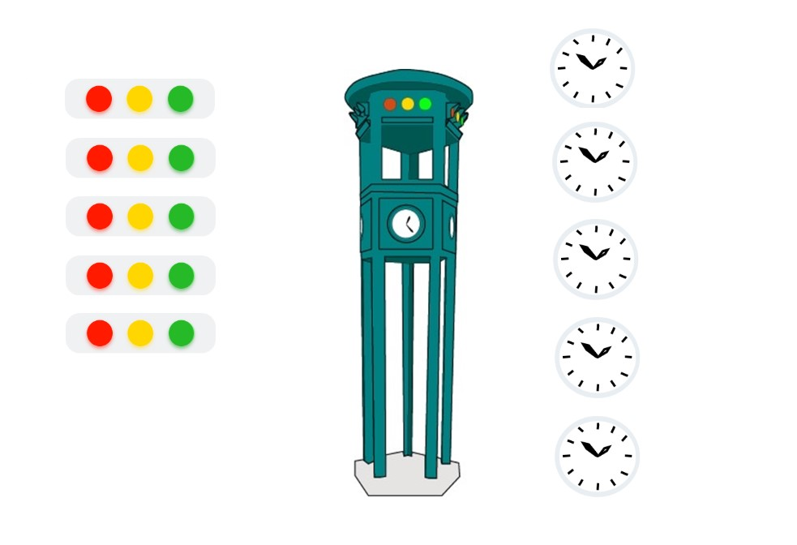
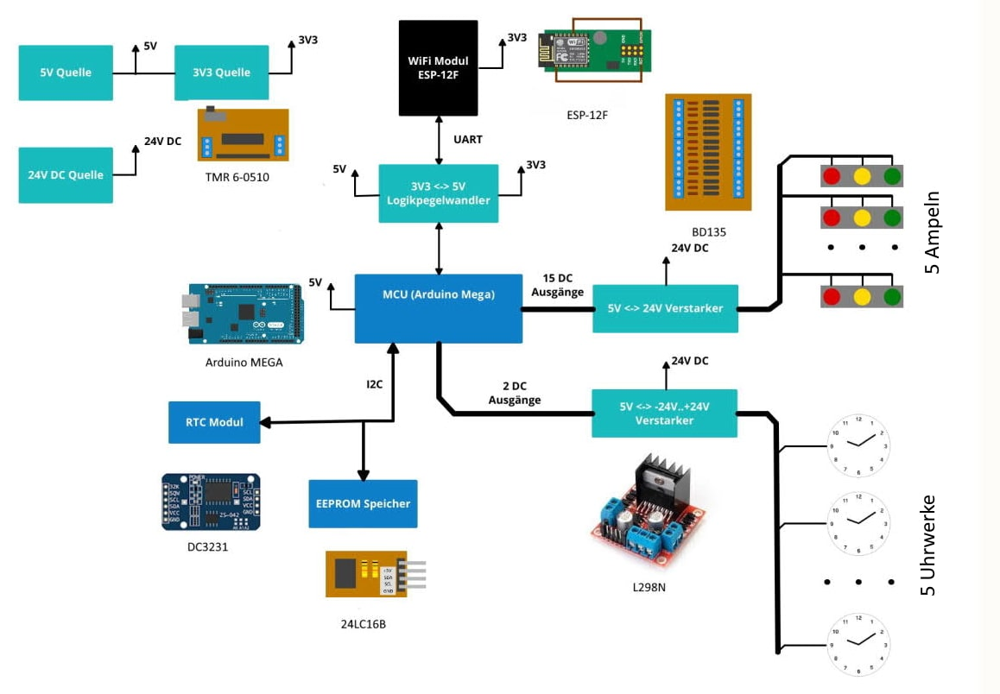

Verkehrsturm aus Potsdammer Platz, Berlin
Das Projekt würde im Rahmen von Ausbildung bei Siemens Professional Education durchgeführt. Die Aufgabe des Projekts war: aus dem masstabgetreuerten Modell des historischen Verkehrsturms von Potsdammer Platz, Berlin, eine interaktive und funktionierende Ausstellungseinheit zu bauen. Als Steuerungssystem, für vereinfachen der zukunftlichen Erweiterunden von Auszubildenden, wurde Arduino-Mega benutzt.
Der Verkehrsturm enthält fünf Uhrwerke und fünf Ampeln. Nach der Durchführung des Projekts werden die Uhrwerke auf aktuelle Uhrzeit nach jeder Einspeisung des Systems automatisch eingestellt. Der Verkehrsturm hat einen WiFi-Modul der verbindet sich mit dem WLAN (wenn WLAN vorhanden ist). Damit wird die Zeit im System automatisch angepasst. Das System hat auch einen Real-Time-Clock Modul, der die Zeit im System auch ohne Netzwerk und ohne Stromversorgung speichert. Dafür, dass nach dem Wiedereinschalten die Uhrwerke auf aktuelle Zeit engestellt werden können, ist im System ein EEPROM-Speicher vorhanden. Da wird effizient und ressoursensparend die aktuell an Uhrwerke eingestellte Zeit gespeichert. Schließlich mit dem WiFi-Modul und WLAN-Verbindung kommuniziert das System mit einer Webseite, wo alle Benutzern die aktuelle Zustand der Ampeln sehen kann und auch manuell die Zustände ändern.
Programm und hardware Module die im Projekt benutzt sind:
- Timers in Interrupt-Modus
- Internet-Verbindung durch ESP-12F
- Real Time Clock Modul
- EEPROM Speicher
Zu Demonstrationszwecken sind die follgenden Dateien komplett oder teilweise dargestellt:
(Wählen Sie ein File aus, um dessen Inhalte sich anzuschauen)
Program für Arduino
_Die_AMPEL_ARD_v1.inoESP_12F.inoLampen.inoMemory.inoRTC.inoFAN.ino
*.ino Dateien
Program für WiFi-Modul ESP-12F
_Die_AMPEL_ESP_v2.inoHTTP.inoServer.ino
*.ino Dateien
_Die_AMPEL_ESP_v2.hHTTP.hServer.h